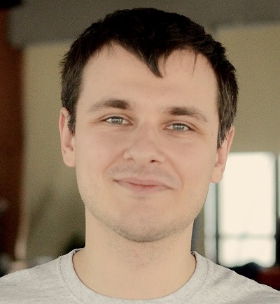

Марсіанські хроніки по–українськи
Як українці можуть допомогти в
дослідженнях територій Марсу
Як українці можуть допомогти в
дослідженнях територій Марсу

Уявіть собі марсохід, що ніби цвіркун міг би стрибати по поверхні Марсу, використовуючи при цьому його ж власні ресурси. Ні, це не пристрій із наукової фантастики, а реальний проект. І вигадали його українці! На перший погляд здається, що Україна хоч і має деякі досягнення у розробках в космічній сфері, проте перерахувати їх можна на пальцях, а своєї лепти в “окупацію” “найпопулярнішої” та другої найближчої до землі планети, наша держава нібито і зовсім не внесла. Проте в 2016 році група українських дослідників зі своїм проектом Mars Hopper перемогла у конкурсі NASA Space Apps Challenge. Перемога подібного рівня стала для наших земляків першою. То ж, хто вони і що запропоновували світові?
Шестикласниця, два інженери, дизайнер, хімік, студент КПІ та викладач комп’ютерних наук –
саме ці люди змогли на увесь світ заявити – Україна може сказати своє іноваційне слово у сфері
космічних розробок і спроектували безпілотник, який міг би використовувати ресурси червоної планети.
Проста,на перший погляд , ідея використання сухого льоду для роботи марсольоту прийшла в голову
дванадцятирічної школярки Софії, учениці Вінницьког ліцею із поглибленим вивченням математики.
Ідею дівчина запозичила із фантастичної книжки, де задумка трохи відрізнялася – сухий лід
поєднувався із левітацією. Батько винахідниці, Олександр Буткалюк, який займався виконанням
технічної частини марсольота а також його випробуванням, згадує: “Перший насос при тестуванні
вибухнув у доньки під ногою, дуже добре, що в цей час мама поїхала до Польщі у тривале відрядження.
Думаю, від неї нам добряче дісталось би! Ми розгромили всю квартиру”.
Не зважаючи на такий великий успіх проекту, школярка не хоче присвячувати своє життя технологіям,
а мріє стати режисером – аніматором. І навіть поїздка до НАСА (яка стала одним із головних призів для учасників - вони стали свідками
справжнього запуску ракети)
не змусила Софію відмовитися від
обраного напрямку.

Я хочу бути режисером-аніматором, який малює увесь час та все робить сам. Моя мета – створювати якісь готичні, фентезійні мультики. Я люблю такі страшні штуки, у яких заміксована містика різна, техніка, магія, яка пов’язана із реальними законами фізики”, - ділиться дівчина.
Олександр також, окрім любові до науково – фантастичної літератури, до космічних польотів ніякого
стосунку не мав. Хіба що має захоплення літати на планері. Якщо подивитися на Mars Hopper, то він
має вигляд планера з довгими тонкими крилами. У цьому проекті інженер застосував багато пов’язаних із цим знать та умінь.
Окрім того, над проектом працювали: Павло Правдюков — Big Data-інженер, він допомагав з фізичними розрахунками,
любить астрономію та музику. Коли він запропонував своїм колегам із лабораторії Ciklum відвідати хакатон від НАСА,
це не викликало великого ентузіазму, тому він вирішив об’єднати сили із Миколою Денисенко. Той закінчив НТУУ «КПІ»,
в команді працював з відео, хімічними розрахунками та 3D-моделюванням. Захоплюється піротехнікою та моделюванням ракет.
Вячеслав Осауленко є аспірантом цього ж вишу — допомагав з фізичними розрахунками. Його у команді називали найбільшим скептиком,
він ще до закінчення київського етапу говорив, що хотів би побачити вживу, як Mars Hopper літає. Ілля Рубінский —
програміст, допомагав з презентацією. А також Андрій Музиченко є інженером-техніком, працював над прототипом і зв’язками
зі ЗМІ. За іронією долі, жоден з цих людей не мав нічого спільного із космічною галуззю, якщо не рахувати хоббі Павла запускати
над Києвом піротехнічні ракети.
Займався тестуванням та технічною частиною проекту
Проводив фізичні розрахунки проекту
працював з хімічними розрахунками та 3D-моделюванням

Займався програмуванням та презентацією
Інженер, допомагав із розрахунками
працював над прототипом і зв’язками із пресою

На самому хакатоні учасники зустрілися випадково.
Сім’я Буткалюків завітала туди аби із користю провести вихідні, іншим же було просто цікаво подивитися на формат подібного заходу.
Основна частина учасників познайомилися один з одним тільки під час роботи над винаходом. NASA запропонувало 6 напрямків – “Аеронавтика”,
“Подорож на Марс”, “Космічна станція”, “Технологія”. “Планета Земля”, “Сонячна система і далекий космос”. Андрій Музиченко, який займався в
команді програмуванням, говорить – “Ми обрали Марс. Завдання від НАСА заключалося у тому, аби зробити засіб пересування для червоної планети.
Ця тема нас зацікавила, бо це був один із небагатьох проектів, який засновувався не тільки на коді. Тут можна було творити вживу і доторкнутися
до усього руками”.
На детальну розробку проекту було відведено лише 48 годин. Основою першої 3D моделі проекту стала пляшка з-під спрайту. Тоді усі жартома переінакшували
назву марсоліт на “пляшколіт”, а деталі для першої моделі купувалися на звичайному ринку та в “Епіцентрі”. Учасники згадують, що досить сильно
хвилювалися, адже НАСА не надто полюбляє концепції, пов’язані із використанням CO2 і надає перевагу більш “калорійному” паливу. Проте команда
залишається переконаною, що саме їх сміливі погляди стали запорукою успіху.
Павло Правдюков згадує першу відповідь від NASA винахідникам: “Ми дуже здивовані вашою інтерпретацією завдання, але вона нам дуже подобається.”
Вигадати за дві доби новий засіб для пересування на Марсі – завдання не з легких. Спершу науковці хотіли створити щось накшталт реактивного ранця,
але відмовилися від неї через відсутність на червоній планеті джерела енергії. Саме тому вони зосередилися на пошуку варіантів використання ресурсів
іншої планети для свого марсольота.
Який же принцип роботи має Mars Hopper? Як відомо, на полюсах червоної планети знаходиться велика кількість діоксиду вуглецю, тобто сухого льоду. Автономний
літальний апарат міг би приземлятися на поверхню таких полярних шапок і спеціальними ковшами загрібав би сухий лід. Далі за допомогою радіоізотопного
генератора лід перетворюватиметься із твердого стану у газ, завдяки чому виникатиме тиск, а як результат – реактивна тяга. Отримавши необхідну енергію,
апарат взлітатиме на певну висоту, де буде переміщатися уже за допомогою гвинтів.
Своє ім’я – Hopper ( у перекладі “стрибунець”), марсоліт отримав через те, що він ніби стрибками переміщатиметься по поверхні Марсу, щораз при приземленні
зачерпуючи близько 50 кілограмів сухого льоду. Його робота може обмежуватися лише відсутністю на певних територіях планети необхідного “пального”.
Якщо ж порівнювати український винахід, скажімо, із останнім марсоходом NASA Curiosity, який живиться від власних сонячних модулів, то, принаймні в теорії,
Mars Hopper має бути у сотні разів ефективнішим з точки зору кількості досліджених територій. Сuriosity рухається зі швидкістю приблизно 140 метрів на годину,
у той час як марсіанський стрибунець від українських учених, якщо гіпотетично потрапить на поверхню червоної планети, зможе уже за місяць дослідити у сотні
разів більшу площу, ніж це зробив уже запущений марсохід.
«К'юріосіті» — роботизований ровер, розмірами з машину, який досліджує Марс та є складовою програми NASA "Марсіанська наукова лабораторія".
Крім того, такий спосіб дослідження Марсу є значно дешевшим. Вартість транспортування одного кілограма вантажу з Землі до Марсу може сягати 100 000 доларів.
Mars Hopper, фактично, позбавляє необхідності везти з собою хімічне або ядерне паливо і натомість буквально живиться локальними ресурсами.
Конструкція марсоходa Marshopper
Після успішної перемоги проекту і подорожі до США, команда отримала схвалення своєї розробки від американських експертів космічної галузі.
Там назвали ідею використання локальних ресурсів на іншій планеті проривною. “У США рухаються в іншому напрямі. Вони не враховували можливості
використання ресурсів самої планети”,- пояснює Андрій Музиченко. Але ж чому проект і досі залишається лише концепцією?
Невдовзі НАСА надіслало візповідь із заявою про те, що не може продовжувати співробітництво із командою над розробкою Mars Hopper,
оскільки дослідники не є резидентами США. Для хлопців залишилася можливість працювати з Європейським космічним агентством, з різноманітними
фондами або програмою ЄС “Горизонт - 2020”. Але і тут дослідників спідкала невдача. Європейське космічне агентство у найближчий час зосереджує
увагу на МКС (Міжнародна космічна станція) та вивченні найближчого космосу. Місії, пов’язані із дослідженням Марсу, розпочнуться, певно, не
раніше 2021 – 2023 років. Ні до чого не призвели тривалі, та все ж безрезультатні переговори із українським Державним космічним агентством.
“Космічна агенція пропонувала нам продовжувати роботу над Mars Hopper. Єдине що марсіанська програма не закладена в поточну українську космічну
програму. Ми і тут неформат. Тому складно виділити на це фінансування”, - каже команда.
Горизонт 2020 — це найбільша рамкова програма Європейського Союзу з фінансування науки та інновацій з загальним бюджетом близько 80 млрд. євро, розрахована на 2014 – 2020 роки.
Найсумнішою частиною цієї “космічної саги” стало те, що команду дослідників до останнього не покидало переконання, що проект цілком можливо реалізувати прямо на території України.

“ У нас є повний цикл виготовлення ракет та купа технологій аерокосмічної галузі. Це нам і потрібно. Виробничі потужності наших промислових гігантів можуть без проблем виготовляти сотні Хопперів і не тільки. Наприклад, це наші «Южмаш», Державне конструкторське бюро «Південне», серійний завод «Антонов». Єдине, що у нас не виготовляють – це радіо-ізотопні генератори, але вони є у NASA. Їх можна купувати у них, а можна виготовляти і у нас. ”,- стверджує Андрій Музиченко.
І сьогодні учасники проекту продовжують поширювати зацікавленість людей у дослідженнях космосу. Дехто проводить зустрічі та лекції у клубі
експерементального ракетобудування, інші беруть участь у заходах присвячених ракетно-космічним технологіям, як от наприклад Space Exploration
Meetup від Odyssey Foundation. А Андрій Музиченко у 2017 році виступав на локальному хакатоні NASA International Space Apps Challenge Kiev
вже не як учасник, а як співорганізатор.
“Щодо України - ви даремно недооцінюєте нашу державу. Тому що ми входимо в список космічних держав. І космічна галузь - чи не єдина,
в якій думка про українців не встигли сплюндрувати. Думка ще дуже висока, і тут можна розвернутися”, - стверджує Ілля Рубінський.
Але “розвернутися”, як бачимо, українським науковцям все ж не дають. На жаль, усе вказує на те, що креслення Mars Hopper так і не зможуть
перемандрувати з паперу на реальні ландшафти Марсу. Зараз проект заморожений, проте учасники радіють хоча б тому, що ідея змогла привернути
увагу українських мас до космосу. Дивно одне, - що, навіть, за наявності іноваційної та дійсно цікавої ідеї, її міжнародного визнання та усіх
необхідних ресурсів, в Україні усі ці фактори всеодно не є гарантією реалізації навіть, здавалося б, такого потенційно успішного задуму як Mars Hopper.
2018